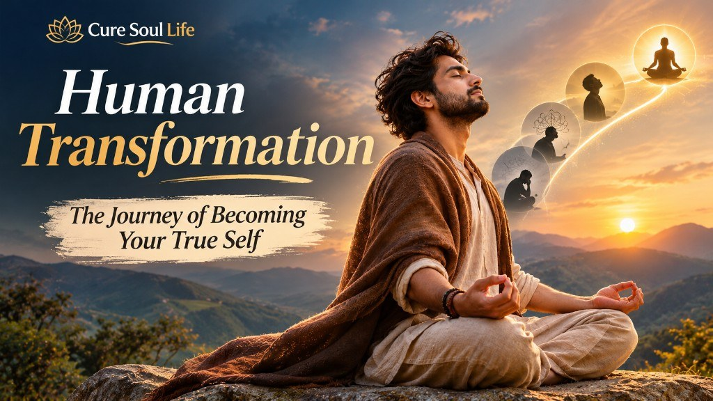

Human Transformation: The Journey of Becoming Your True Self

Introduction: The Journey Begins Within
Every human being experiences moments when life seems to demand something different. Sometimes it is a difficult experience, sometimes a personal loss, sometimes a feeling of emptiness, and sometimes simply the realization that there must be more to life than the routine we follow every day.
These moments can become the beginning of human transformation.
Human transformation is not simply about changing your appearance, career, financial status, or lifestyle. It is a deeper process of changing how you think, feel, respond, understand yourself, and experience the world around you.
It is the journey of moving from unconscious habits to conscious choices, from emotional reactions to inner understanding, and from living according to external expectations to discovering your authentic self.
At Cure Soul Life, we believe that meaningful transformation begins when a person starts looking within.
1. What Is Human Transformation?
Human transformation is the process of personal, emotional, mental, and spiritual evolution.
It involves recognizing the patterns that influence your life and gradually developing a healthier relationship with yourself and the world.
Transformation can happen in different dimensions:
- Mental Transformation: Changing limiting beliefs, developing positive thinking patterns, and improving the way you approach challenges.
- Emotional Transformation: Understanding your emotions, processing difficult experiences, and developing emotional balance.
- Spiritual Transformation: Exploring your deeper identity, purpose, awareness, and connection with life.
- Behavioural Transformation: Replacing unhealthy habits with conscious actions and meaningful routines.
- Relationship Transformation: Learning empathy, healthy communication, self-respect, and meaningful connections.
True transformation happens when these dimensions begin working together.
2. Why Do Human Beings Need Transformation?
Many people spend years following the same patterns without questioning whether those patterns are helping them grow.
We often carry beliefs from childhood, social expectations, past experiences, fear of failure, and the pressure to meet other people's expectations.
Over time, these influences can disconnect us from our authentic selves.
You might have a successful career but still feel unfulfilled. You might have relationships but experience loneliness. You might achieve your goals but continue searching for inner peace.
This is where transformation becomes important.
It encourages us to ask meaningful questions:
- Who am I beyond my responsibilities and achievements?
- Why do I repeatedly experience the same emotional patterns?
- What truly makes me happy?
- Am I living according to my values or other people's expectations?
- What kind of person do I want to become?
Sometimes, asking the right questions is the first step towards changing your life.
3. Five Stages of Human Transformation
Transformation is not an overnight event. It is a continuous process that develops through awareness, patience, and consistent action.
Stage 1: Self-Awareness
The first step is understanding yourself.
Observe your thoughts, emotions, habits, reactions, strengths, and weaknesses without constantly judging yourself.
Start maintaining a journal and notice what makes you happy, uncomfortable, anxious, or motivated.
You cannot consciously change a pattern that you have never acknowledged.
Stage 2: Acceptance
Once you begin understanding yourself, the next step is acceptance.
Accepting yourself does not mean refusing to improve. It means acknowledging your present reality without shame.
Your past experiences may have influenced you, but they do not have to determine your future.
Stage 3: Letting Go
One of the most challenging parts of transformation is releasing what no longer serves you.
It could be an unhealthy habit, a limiting belief, an old identity, unrealistic expectations, or resentment connected to past experiences.
Letting go is not about forgetting everything. It is about learning from your experiences without allowing them to control your present.
Stage 4: Conscious Action
Awareness without action rarely creates lasting change.
Begin with small, realistic steps:
- Practise meditation or mindful breathing.
- Read books that encourage personal development.
- Spend time in nature.
- Build healthier daily routines.
- Develop gratitude.
- Set boundaries in relationships.
- Make time for self-reflection.
Consistency is more important than perfection.
Stage 5: Integration and Growth
The final stage is integrating your new understanding into everyday life.
Transformation becomes meaningful when your awareness influences your decisions, relationships, habits, and priorities.
It is not about reaching a perfect destination. It is about continuously growing while staying connected with your values.
4. The Role of Mindfulness and Meditation
Modern life constantly demands our attention. Notifications, deadlines, responsibilities, and expectations often leave little room for silence.
Mindfulness helps us return to the present moment.
It is the practice of observing our thoughts, emotions, and surroundings without immediately reacting to them.
Meditation can support this process by creating space for stillness, concentration, and self-observation.
Even starting with 10 minutes of mindful breathing each day can help you develop a regular practice of self-awareness.
The objective is not to stop thinking completely. It is to develop a healthier relationship with your thoughts.
5. Emotional Healing: An Important Part of Transformation
We all carry experiences that shape how we see ourselves and others.
Some experiences may leave us with fear, disappointment, insecurity, or unresolved emotions.
Emotional healing involves recognizing these experiences, understanding their influence, and finding healthier ways to process them.
It may include journaling, meditation, supportive conversations, healthy relationships, or professional guidance when needed.
Remember, healing is not linear. Some days may feel easier than others, and that is a natural part of personal growth.
You do not have to rush your journey.
6. How to Begin Your Human Transformation Journey Today
You do not need to make dramatic changes to begin transforming your life.
Start with these seven practical steps:
- Spend time with yourself: Create a few minutes of silence every day.
- Understand your thoughts: Write down recurring thoughts and emotional triggers.
- Practise gratitude: Acknowledge the positive things in your life.
- Take care of your body: Prioritize sleep, movement, and balanced nutrition.
- Choose your environment carefully: Spend time with people who encourage healthy growth.
- Learn continuously: Explore philosophy, psychology, spirituality, and personal development.
- Take one conscious action daily: Make small decisions that align with the person you want to become.
Do not compare your journey with someone else's. Every individual has a different starting point, experience, and pace of growth.
7. Human Transformation Is a Lifelong Journey
There is no final certificate that declares you completely transformed.
As life changes, we encounter new responsibilities, relationships, challenges, and opportunities. Each experience gives us another chance to understand ourselves more deeply.
The purpose of transformation is not to become flawless. It is to become more aware, compassionate, responsible, emotionally balanced, and connected with life.
Sometimes the biggest transformation is not visible to the outside world.
It may simply be the moment when you stop reacting out of anger, start choosing peace over unnecessary conflict, forgive yourself for past mistakes, or develop the courage to live according to your own values.
These small internal shifts can gradually change the way you experience your entire life.
Conclusion: Transform Yourself, Transform Your Life
Human transformation begins with a simple but powerful decision: the decision to understand yourself.
You cannot control every situation in life, but you can gradually develop greater awareness of how you respond to those situations.
When you begin working on your thoughts, emotions, habits, relationships, and inner awareness, you create the foundation for a more conscious and meaningful life.
At Cure Soul Life, the vision is to encourage individuals to explore their inner potential through self-discovery, mindful living, holistic well-being, and personal growth.
Because the most meaningful journey you will ever undertake is the journey towards understanding yourself.
Your transformation begins within.
Frequently Asked Questions (FAQs)
1. What is human transformation?
Human transformation is the process of developing greater mental, emotional, behavioural, and spiritual awareness to create a more meaningful and balanced life.
2. How long does human transformation take?
There is no fixed timeline. It is an ongoing journey influenced by individual experiences, awareness, consistent practices, and personal circumstances.
3. Can meditation help with human transformation?
Meditation can support self-awareness, attention, and emotional regulation. Regular practice can become a valuable part of personal development.
4. What is the first step towards personal transformation?
Self-awareness is an important starting point. Understanding your thoughts, emotions, habits, and beliefs helps you identify what you want to change.
5. Is human transformation only a spiritual process?
No. It can involve mental, emotional, physical, behavioural, social, and spiritual development. Each dimension contributes to overall personal growth.
About Cure Soul Life
Cure Soul Life is a platform dedicated to inner exploration, conscious living, personal development, and holistic well-being. Its purpose is to inspire people to reconnect with themselves and explore a more meaningful way of living.
Back to the blog